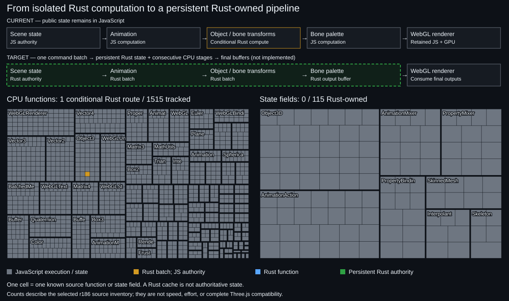

Declared capability inventory only — not all Three.js APIs, equal work units, or performance coverage.

Generated by tools/progress.py. Raw JSON · Counting rules · Inventory history
| Subsystem | Rust implemented | Declared total |
|---|---|---|
| Transforms | 6 | 6 |
| Scene authority | 0 | 4 |
| Animation | 0 | 4 |
| Skeletons | 0 | 3 |
| Visibility / LOD | 0 | 4 |
| Render lists | 0 | 4 |
| Upload preparation | 0 | 4 |
| Total in this inventory | 6 | 29 |
| Subsystem | Passed | Declared total |
|---|---|---|
| Correctness | 3 | 3 |
| Integration | 3 | 3 |
| Performance | 1 | 4 |
| Broad ownership | 0 | 2 |
| Total in this inventory | 7 | 12 |
Animation, skeleton palettes, visibility, render lists, uploads and shaders currently retain upstream JS/GPU behavior. Only the scoped transform batch runs in Rust.
Evidence is a reviewed snapshot, not a claim that every environment passed. Broad whole-frame gain has not been established; the cloud hierarchy experiment regressed. Physical GPU validation is outstanding. Retained GPU shaders are not Rust ports.
Presentation inspired by AnyPS5 progress; independently implemented for this project.